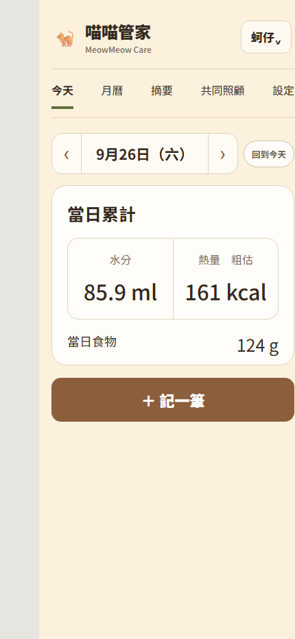

一、記下一件事
直接在 LINE 輸入日常說法，例如：
「乾乾5」
「喝水30」
「嘔吐 白沫」
「喝水30」
「嘔吐 白沫」
也可以從圖文選單按「記一筆」，再選主食、乾乾、水、藥或其他類別。常用品項會依使用情況顯示；遇到不確定的食物名稱，系統會先詢問，不會直接猜測寫入。
二、查看今天與近期
輸入「今天」查看今日照護確認。輸入「近七天記錄」回顧每天的飲食與喝水；完整月曆、每筆紀錄與設定則從「管家後台」進入。

三、整理給醫生或照護者
輸入「出摘要」，依序選擇貓咪、用途與日期。用途可選給醫生看或給照護者，系統會依已有紀錄整理內容；缺少必要照護資料時會先詢問。
摘要是對已輸入資料的整理，不代表醫療診斷。是否需要治療、調整藥物或緊急就醫，請由獸醫判斷。
四、記錯可以改，忘記可以補
- 調整最近一筆：依畫面提示修改數量。
- 刪除最近一筆：輸入「刪除」並確認。
- 完整修改與補登：開啟管家後台，選擇對應紀錄。
- 後台連結過期：重新輸入「管家後台」取得新入口，既有資料不會因此消失。